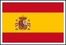

| Show 14 July 2010 |
|
Eurovision Song
Contest with Radio International and / on Oikotimes.TV
CONGRATULATIONS to
Spain for winning the 2010 World Cup on Sunday, 11 July 2010. So, this
week's show is slightly Spanish themed with some of the finest entries
of Spain to the Eurovision Song Contest. Alasdair Rendall, our Eurovision Song Contest
correspondent from the United Kingdom takes a look back at
some of Spain's best entries to the Eurovision Song Contest.
 Eurovision Song Contest Interview - Ludwig Galea (Julie &
Ludwig): JP met Ludwig Galea, 50% of Julie & Ludwig, in
Malta at the Malta Eurosong 2010 earlier on this year. Listen to the
interview with the singer about his experience at the Eurovision Song
Contest in 2004 where he represented Malta together with his singing
partner Julie and the song "On again ... Off again" which
reached Number 12 in Istanbul, Turkey. Eurovision Song Contest Interview - Ludwig Galea (Julie &
Ludwig): JP met Ludwig Galea, 50% of Julie & Ludwig, in
Malta at the Malta Eurosong 2010 earlier on this year. Listen to the
interview with the singer about his experience at the Eurovision Song
Contest in 2004 where he represented Malta together with his singing
partner Julie and the song "On again ... Off again" which
reached Number 12 in Istanbul, Turkey.
 Euro Friend Song Contest 2010 - Call out for participation:
Radio International is joined by the prime organiser of this
particular Song Contest based on all the over 1100 Eurovision Song
Contest entries. This annual event was won in 2009 by the runner up of
the 2009 Eurovision Song Contest: Iceland's Yohanna and "Is it true".
Andy Simon tells us all about this Song
Contest and how you can actively take part with casting your votes. In fact, to take part in the voting all you have to do is to go to FaceBook and search for Euro Friend Song Contest, become a member and select your favourite Top Ten Eurovision Songs from the list given to you. Andy will actually send you a FaceBook Message to explain all in detail. Voting Deadline for this first Heat is this Sunday, 18 July 2010, 1200 hours. Then the second Head beginns. Enjoy your participation. Euro Friend Song Contest 2010 - Call out for participation:
Radio International is joined by the prime organiser of this
particular Song Contest based on all the over 1100 Eurovision Song
Contest entries. This annual event was won in 2009 by the runner up of
the 2009 Eurovision Song Contest: Iceland's Yohanna and "Is it true".
Andy Simon tells us all about this Song
Contest and how you can actively take part with casting your votes. In fact, to take part in the voting all you have to do is to go to FaceBook and search for Euro Friend Song Contest, become a member and select your favourite Top Ten Eurovision Songs from the list given to you. Andy will actually send you a FaceBook Message to explain all in detail. Voting Deadline for this first Heat is this Sunday, 18 July 2010, 1200 hours. Then the second Head beginns. Enjoy your participation.
 EurovisiOradio.eu's Eurovision Quiz: With kind collaboration with our colleagues and friends from eurovisiOradio.eu based in Antwerp, Belgium they offer a quiz where you can win one of the three copies available of the 2010 Eurovision Song Contest. All you have to do is to contact their website at www.eurovisioradio.eu and answer two simple questions. EurovisiOradio.eu's Eurovision Quiz: With kind collaboration with our colleagues and friends from eurovisiOradio.eu based in Antwerp, Belgium they offer a quiz where you can win one of the three copies available of the 2010 Eurovision Song Contest. All you have to do is to contact their website at www.eurovisioradio.eu and answer two simple questions. For the 2011 Eurovision Song Contest there is already one person known to participate. Question 1: Who is he/she? Question 2: For which country will she/he sing? Please note that the competition closes on Sunday, 18 July 2010 at 1200 hours. Good luck and enjoy!  Eurovision News. Luke
Fisher joins us on a weekly basis to supply us with the latest
happenings in the world of the Eurovision Song Contest. Eurovision News
is available on www.eurovision.tv,
oikotimes.com,
esctime.com, escdaily.com, esctoday.com and escflashmalta.com. Listen
to
a
pick
of
the
Eurovision
News
also on Radio
International: Eurovision News. Luke
Fisher joins us on a weekly basis to supply us with the latest
happenings in the world of the Eurovision Song Contest. Eurovision News
is available on www.eurovision.tv,
oikotimes.com,
esctime.com, escdaily.com, esctoday.com and escflashmalta.com. Listen
to
a
pick
of
the
Eurovision
News
also on Radio
International:
This
is
just
a
selection. Go to www.oikotimes.com
for detailed information.
 Your 3 Minutes of Fame on Radio International:
Radio International would like to know from you your first
Eurovision Experience either live in a Final of the Eurovision Song
Contest or watching at home or during a Eurovision party. Tell us how
you found out about the Eurovision Song Contest. What special things do
you remember, liked, disliked and of course your favourite Eurovision
Song. We will call you during the show - have a nice chat with you and
then play out with your favourite Eurovision song. For that please
contact us via CONTACT and let us know your phone number and the song
you wish to have played on the show. This will be great fun. We need
your participation for this - so please don't be shy. :) Your 3 Minutes of Fame on Radio International:
Radio International would like to know from you your first
Eurovision Experience either live in a Final of the Eurovision Song
Contest or watching at home or during a Eurovision party. Tell us how
you found out about the Eurovision Song Contest. What special things do
you remember, liked, disliked and of course your favourite Eurovision
Song. We will call you during the show - have a nice chat with you and
then play out with your favourite Eurovision song. For that please
contact us via CONTACT and let us know your phone number and the song
you wish to have played on the show. This will be great fun. We need
your participation for this - so please don't be shy. :)
Eurovision Quiz: Scratch your heads and bite your
nails at our weekly Eurovision
Song Contest Quiz. Good luck and win a copy of a past
Eurovision Song
Contest Final on DVD. The first two right entries
naming
the five
clips with Artist, Song, Country and Year will win. Send your answers
via
the website's CONTACTs page.
Eurovision Song
Contest Calendar of Events:
Check out a
detailed listing of all events scheduled around
Europe. If you hear of something we have not listed please drop us a
line by clicking here and let us know. After Eurovision is before
Eurovision and to bridge the Eurovision Gap many Eurovision Clubs will
be holding their annual convention.
Upcoming Events:
17 Jul 2010 - 10th Anniversary of Eurovision Club Germany
04 Sep 2010 - Eurovision Cruise by OGAE Finland. More details - here.
11 Sep 2010 - International Eurovision Party in Setubal/ Portugal
16 Oct 2010 - EUROBASH
2010 in Manchester, OGAE UK
30 Oct 2010 - OGAE Luxembourg Gala(details to come soon)
06 Nov 2010 - Eurovision Club (EC) Germany's Annual Convention
Eurovision Song Contest Interviews the Radio
International Team has done with the Eurovision performers can be heard
by visiting our Eurovision
section of this website or check out the Radio International
goes.... part of the website.
Eurovision Music requests as well as other music
requests are most welcome and can be done via our website's CONTACT US page. Let us know what you want to hear
and where you are from. Due to
the large number of requests
we received and cannot accommodate this week these requests will be
added to the play list for the
future shows.
|
| < Prev | Next > |
|---|